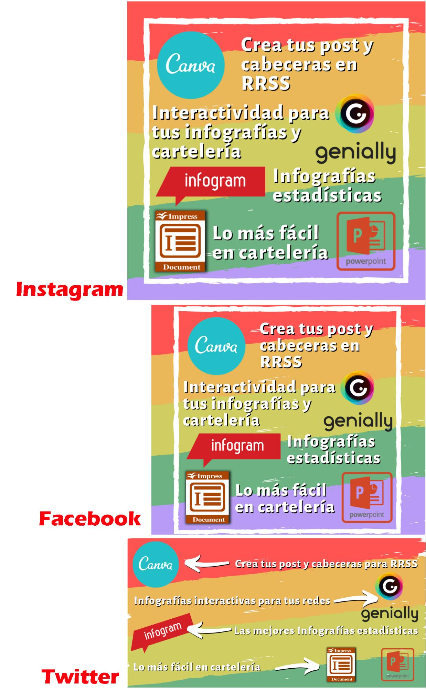

Una imagen para cada red
Una misma imagen no sirve para todas las redes, si en las cabeceras ni en las entradas si no queremos perder información por los extremos. En este enlace puedes encontrar información actualizada (porque las redes cambian de vez en cuando sus configuraciones) del tamaño de las imágenes para las distintas redes.

Algunas herramientas, como Canva o Genial.ly, proporcionan plantillas para crear cabeceras, posts, stories… Por ejemplo en Canva disponemos de:
Una de las formas más sencillas para adecuar las imágenes a cada red es crear una diapositiva con un programa de presentaciones (Google, PowerPoint, Impress), redimensionarla al tamaño deseado3 y componer la imagen infográfica. Si creamos una nueva con las dimensiones adecuadas para otra red, podemos copiar y pegar los elementos de la anterior y recomponer, y así sucesivamente. Estas diapositivas pueden servir de plantillas para publicaciones posteriores.
Como ejemplo, en este enlace proporcionamos varias plantillas para post o cabeceras, aunque, como ya hemos dicho, los formatos de las redes suelen cambiar de vez en cuando y pueden quedar desactualizadas.
3. Desde diseño/configurar página en el caso de Power Point; desde diapositiva/propiedades en Impress de Libre Office, o desde archivo/configuración de página/personalizado en Google Slides. ↩

Community Manager Educativo por Jose Ramón Olalla Celma bajo licencia Creative Commons Reconocimiento-NoComercial-CompartirIgual 4.0 Internacional License.